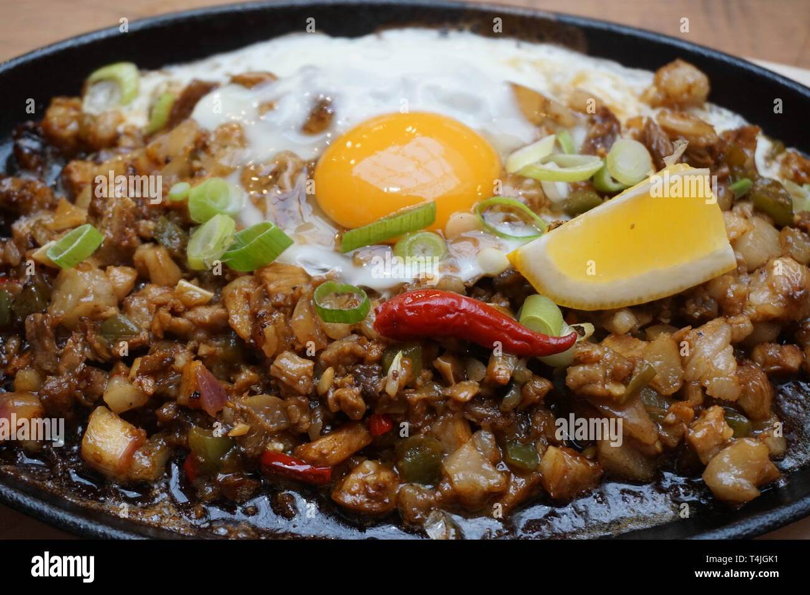

Home
Sisig

Description
Sisig is a popular Filipino dish made from parts of pig head and liver, seasoned with calamansi and chili peppers. It is often served on a sizzling plate.
Ingredients
- 1 lb pig head (ears, cheeks, and snout)
- 1/2 lb pork liver
- 1 onion, chopped
- 3-4 chili peppers, chopped
- 2 tablespoons soy sauce
- Juice of 2-3 calamansi or lime
- Salt and pepper to taste
- 1 tablespoon oil for frying
Instructions
- Boil the pig head parts until tender, then chop into small pieces.
- In a pan, heat oil and sauté the onions until translucent.
- Add the chopped pig head parts and pork liver to the pan.
- Season with soy sauce, calamansi juice, salt, and pepper.
- Add the chopped chili peppers and mix well.
- Cook for another 5-10 minutes until everything is well combined.
- Serve hot on a sizzling plate or in a bowl with rice.